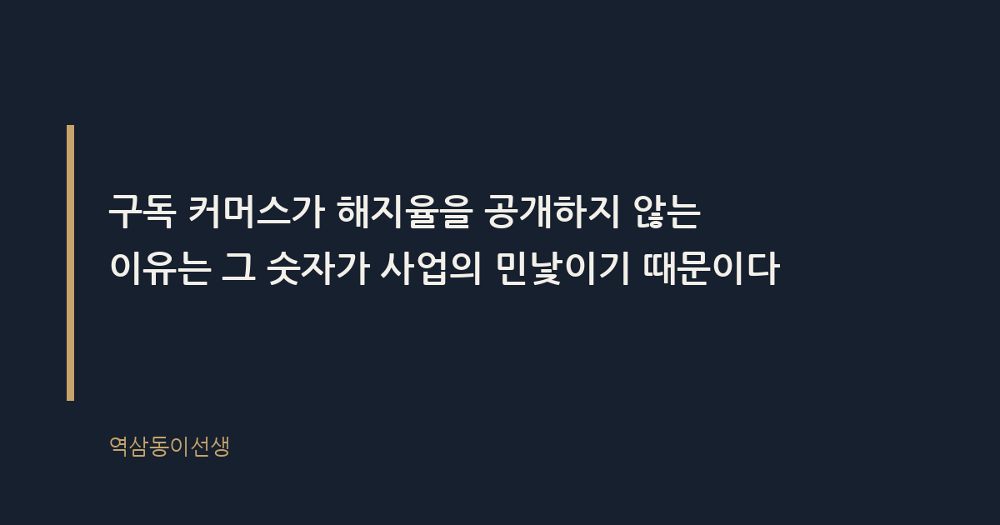
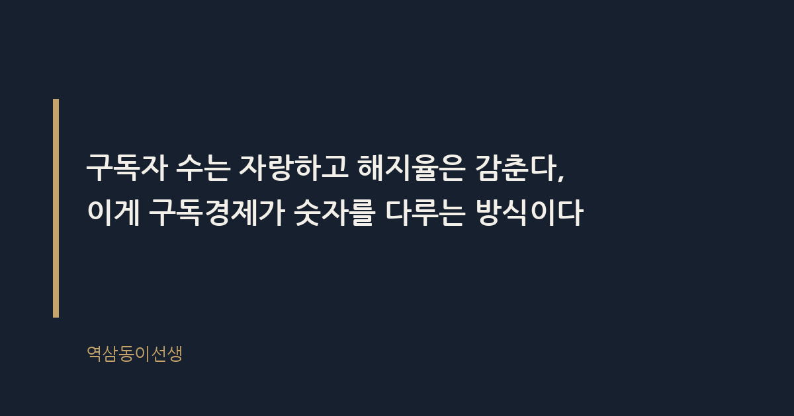

주제 구독 커머스가 해지율을 공개하지 않는 이유 (evergreen / brand)
제목 후보
메타 설명 구독 커머스가 해지율을 공개하지 않는 진짜 이유를 개인 경험과 다크패턴 사례로 풀어본다. 가입 전 확인할 체크리스트 포함.
라벨 구독커머스, 해지율, 구독경제, 다크패턴, 구독해지, OTT구독, 구독서비스해지방법, 정기구독해지율, 구독경제성장의함정, 구독해지어려운이유
실용 자산 체크리스트 — 해지율이라는 숨겨진 지표 대신 독자가 가입 전 직접 확인할 수 있는 행동 체크리스트를 제공해 정보형 검색 의도를 실질적으로 충족시킨다
발행 전 팩트체크
이미지 (Blogger 편집기에 드래그해 넣으세요)
도입부 사진 · ⓒ kaboompics / Pexels


얼마 전 꽃 정기구독을 끊으려고 앱을 열었다. 결제 내역도 있고 배송 이력도 다 있는데, 정작 '해지하기' 버튼이 안 보였다. 한참을 뒤지다 겨우 찾은 건 '일시정지'였다. 해지가 아니라 정지. 결국 1:1 문의를 남겼고, 사흘 뒤 상담원에게 전화가 왔다. "정말 해지하시겠어요?"를 세 번 물었다. 꽃 몇 송이 끊는 일이 이렇게 공들여 막아야 할 일인가 싶었다.
구독 커머스가 해지율을 공개하지 않는 이유는 그 숫자가 사업의 민낯이기 때문이다. 구독자 수는 투자 유치 자료 첫 장에 큼지막하게 들어가지만, 해지율은 어느 피치덱에서도 본 적이 없다. 이건 우연이 아니라 설계다.
내가 겪은 꽃 구독만의 일이 아니다. 와인 구독, 반려식물 구독, 면도날 구독까지 패턴이 비슷하다. 가입은 결제 버튼 한 번이면 끝나는데, 해지는 전화 상담이나 채팅 상담을 거쳐야 한다. 심지어 해지 의사를 밝혀도 "한 달만 더 체험해보시라"는 역제안이 따라붙는다.
이걸 업계에서는 '다크패턴(dark pattern)'이라 부른다. 다크패턴이란 소비자가 특정 행동을 하지 못하도록 UI와 절차를 교묘하게 설계하는 방식이다. 가입 경로는 세 번의 클릭이면 되는데 해지 경로는 일곱 단계를 거치게 만드는 식이다. 이렇게 번거로운 해지 절차 자체가 해지율을 낮추는 구조적 장치 노릇을 한다.
후배 중 하나는 밀키트 정기배송을 끊으려다가 "해지" 메뉴를 아예 못 찾아서 카드사에 분실신고를 하고 카드를 재발급받았다. 웃픈 이야기지만 실제로 소비자들 사이에서 흔히 쓰는 우회로다. 해지 버튼을 숨기는 회사의 설계가 성공했다는 뜻이기도 하다. 고객이 정상적인 경로 대신 카드를 바꾸는 쪽을 택할 정도면, 그 UI는 이미 의도한 효과를 거둔 셈이다.
비슷한 사례를 하나 더 들자면, 동네 카페에서 만난 지인은 영양제 정기배송을 끊으려다 앱이 아예 로그아웃 상태로 돌아가 버리는 경험을 했다고 한다. 재로그인을 하면 해지 화면 대신 첫 화면으로 튕겨 나왔다. 세 번을 반복하다 결국 포기하고 다음 달 결제를 또 받았다는 이야기였다. 설계 오류라고 보기엔 너무 일관되게 같은 지점에서 끊겼다.
여러 구독 서비스를 직접 써보며 정리해보니 해지를 막는 방식에는 몇 가지 반복되는 패턴이 있었다.
이런 장치들은 개별적으로 보면 불법이라 단정하기 어렵다. 그런데 이 장치들이 한 서비스 안에 네다섯 개씩 겹쳐 있으면 이야기가 달라진다. 소비자는 포기하고 그냥 다음 달 결제를 또 당하는 쪽을 선택하게 된다. 번거로움이 쌓이면 그 자체로 하나의 장벽이 된다.
마케팅 조직에 있을 때 외주 콜센터 운영 보고를 받은 적이 있다. 해지 문의가 들어오면 상담원에게는 '리텐션 스크립트'라는 게 주어진다. 고객이 해지 의사를 밝히면 즉시 처리하지 않고 할인가, 혜택 연장, 무료 체험 추가 같은 카드를 순서대로 제시하라는 내용이었다. 이 단계를 다 거쳐도 고객이 해지를 고수해야 비로소 처리 버튼을 누를 수 있었다.
상담원 개인의 불친절이 아니라 조직이 짜 놓은 각본이라는 뜻이다. 실제로 리텐션 전환율, 즉 해지 문의 중 몇 퍼센트를 유지로 돌려세웠는지가 콜센터 평가 지표에 들어가는 경우가 많다고 들었다. 상담원 입장에서는 고객을 붙잡아야 실적이 오르는 구조이니, "정말 해지하시겠어요?"를 세 번 묻는 건 불친절이 아니라 업무 매뉴얼에 가깝다.
해지율, 흔히 처닝레이트(churn rate)라 부르는 지표는 일정 기간 동안 기존 구독자 중 이탈한 비율을 뜻하는 숫자다. 이 숫자가 공개되지 않는 가장 큰 이유는 단순하다. 비상장 스타트업은 공시 의무가 없다. 상장사라 해도 재무제표에 '해지율'을 의무적으로 기재하라는 규정은 없다. 공개하고 싶지 않으면 안 해도 그만인 지표라는 뜻이다.
그래서 투자 유치 자료나 보도자료에는 늘 "누적 가입자 100만 명 돌파" 같은 문구만 등장한다. 그 100만 명 중 지금도 실제로 결제하고 있는 사람이 몇 명인지는 아무도 말하지 않는다. 누적 가입자 수는 계속 우상향할 수밖에 없는 숫자다. 한 번이라도 가입한 적 있으면 영원히 그 숫자 안에 남기 때문이다. 반면 해지율은 그 성장 스토리를 정면으로 깨는 숫자다.
구독 모델이 해지율에 유난히 예민한 이유는 사업 구조 자체에 있다. 구독 비즈니스는 신규 가입자를 데려오는 데 드는 비용, 즉 고객획득비용(CAC)을 여러 달에 걸친 결제로 천천히 회수하는 구조다. 광고비를 써서 가입자 한 명을 데려왔는데 그 사람이 두 달 만에 해지하면, 회사는 그 고객에게서 투입한 비용조차 회수하지 못한 채 손실만 떠안는다.
이런 구조이기 때문에 해지율이 조금만 높아져도 손익 그래프가 즉각 흔들린다. 반대로 해지율이 낮으면 같은 마케팅비로도 훨씬 긴 수익을 기대할 수 있다. 결국 해지율은 매출보다 더 솔직하게 사업의 지속가능성을 보여주는 숫자다. 그러니 경영진 입장에서는 가입자 수는 보여주고 싶고, 해지율은 내부 회의실 밖으로 내보내고 싶지 않은 숫자가 된다.
마케팅 조직에 있을 때 투자 유치를 준비하는 스타트업 피치덱을 여러 번 들여다본 적 있다. 공통적으로 '월간 해지율' 대신 '연간 리텐션율'이라는 표현을 썼다. 같은 데이터를 다른 틀로 보여주는 것이다. 월간 해지율 8%는 숫자만 보면 꽤 높아 보이지만, "연 92% 리텐션"이라고 하면 꽤 괜찮아 보인다. 같은 숫자인데 프레임만 바꿨을 뿐이다.
더 흥미로운 건 리텐션 코호트 차트를 보여주는 방식이었다. 가입한 지 오래된 '충성 고객' 코호트만 따로 떼어 "이렇게 오래 남는다"를 강조하고, 최근 가입자 중 빠르게 빠져나가는 코호트는 슬라이드 뒤쪽 부록으로 숨겨두는 경우를 여러 번 봤다. 보는 사람이 전체 평균을 묻지 않으면 굳이 먼저 말하지 않는다. 숫자를 조작한 건 아니지만, 어떤 숫자를 먼저 보여줄지는 철저히 골라낸다.
이런 화법이 생기는 이유는 투자자가 보는 건 결국 성장 곡선이기 때문이다. 해지율이 낮다는 인상을 줘야 다음 라운드 밸류에이션이 올라간다. 그러니 숫자를 숨기는 게 아니라, 숫자를 보여주는 방식을 고른다. 이게 구독경제가 숫자를 다루는 방식이다.
이 구조가 소비자 피해로 번지자 각국 규제당국이 움직이기 시작했다. 미국 연방거래위원회(FTC)는 구독 해지를 가입만큼 쉽게 만들라는 '클릭 투 캔슬(Click-to-Cancel)' 규칙을 추진한 것으로 알려졌다. 국내에서도 공정거래위원회가 다크패턴 실태조사를 통해 구독 해지 방해 행위를 주요 유형으로 지목한 것으로 알려졌다. 전자상거래법 개정 논의에도 해지 절차를 가입 절차만큼 간소화하라는 내용이 포함된 것으로 전해진다.
이런 규제가 생기는 이유는 해지가 어려운 구조 자체가 소비자의 선택권을 실질적으로 제한하기 때문이다. 해지 버튼 하나를 어디에 두느냐가 수백만 구독자의 월별 결제 여부를 좌우한다면, 그건 더 이상 디자인의 문제가 아니라 공정거래의 문제다.
해외에서도 비슷한 움직임이 있었다. 해지 절차가 복잡하다는 지적을 받아온 몇몇 글로벌 OTT·커머스 플랫폼이 규제 발표 이후 해지 메뉴 위치를 눈에 띄게 바꿨다는 보도가 있었던 것으로 알려졌다. 제도가 바뀌면 설계도 따라 바뀐다는 걸 보여주는 사례다. 반대로 말하면, 제도가 없던 동안은 바꿀 이유가 없었다는 뜻이기도 하다.
해지율을 회사가 공개할 가능성은 낮다. 그렇다면 구독자 입장에서 스스로 확인할 수 있는 것부터 챙기는 게 현실적이다.
결국 이 모든 설계는 하나의 목적으로 수렴한다. 성장하는 사업처럼 보이는 것. 구독 커머스란 일정 주기로 자동 결제가 이뤄지는 상거래 모델을 뜻한다. 이 모델의 핵심 가치는 '꾸준함'인데, 아이러니하게도 그 꾸준함을 증명하는 가장 정직한 숫자인 해지율은 끝까지 감춰진다.
씁쓸하면서도 묘하게 납득이 간다. 자기 회사의 가장 아픈 숫자를 먼저 꺼내 보일 배짱 있는 경영자는 드물다. 다만 소비자 입장에서는, 화려한 가입자 수 뒤에 숨은 해지율을 짐작해보는 습관 정도는 가져볼 만하다. 꽃 구독 해지 전화를 세 번이나 받아본 사람으로서 하는 말이다.
Q. 구독 서비스 해지하려다 전화 상담까지 가본 적, 저만 있는 건 아니죠?